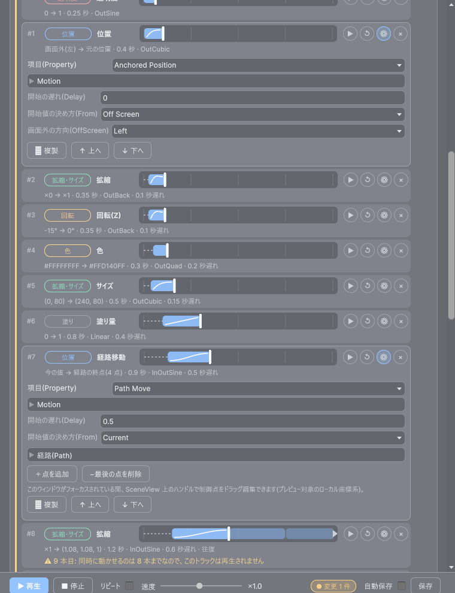
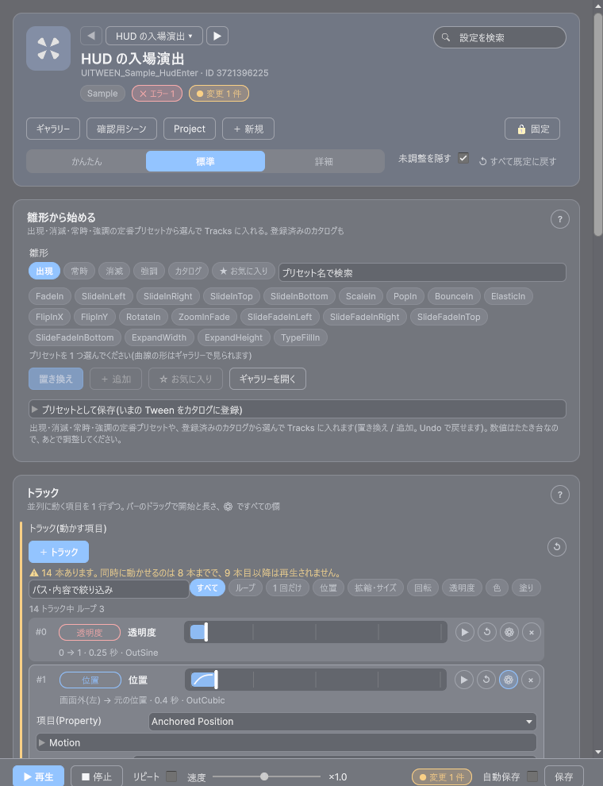
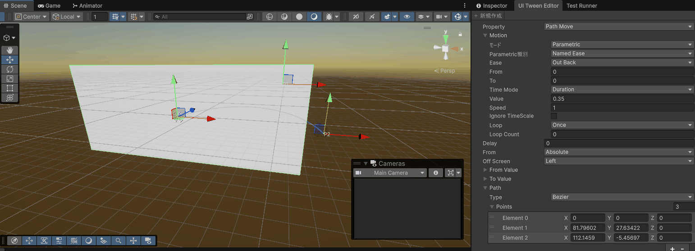
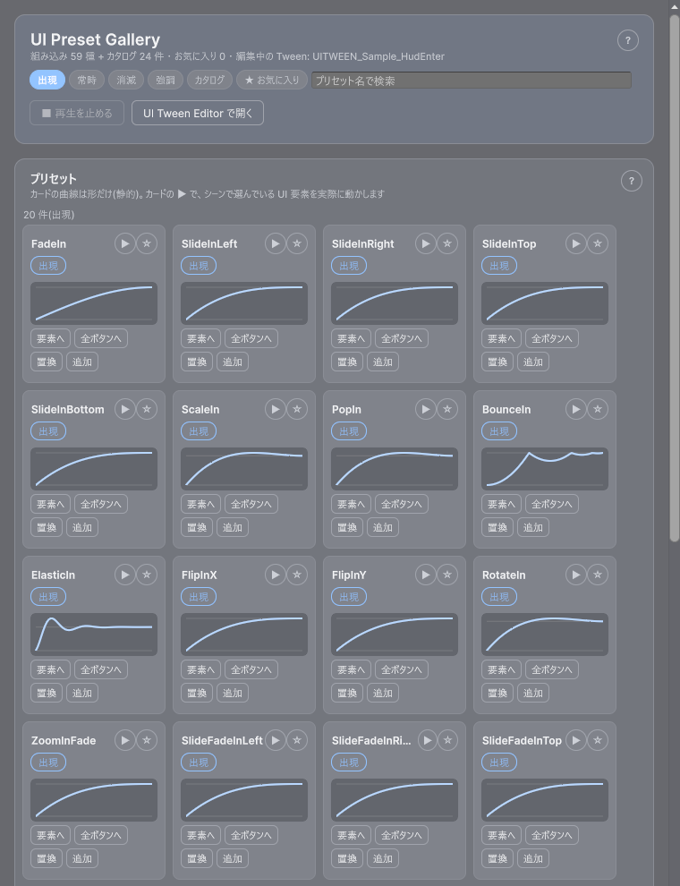

最終更新日: 2026-10-13
UI の「出る・消える・ふわふわ揺れる・押したら跳ねる」といった動きを、プログラムを書かずに付けるための 3 つの道具です。
対象のデータを選んでいない（空の）ときは、ウィンドウの「サンプルを作る」ボタンでサンプルのデータを作って試せます（Assets/GameData/<種別>/Sample/ にカテゴリ Sample で作られます。同じものが既にあれば、作らずそれを選びます）。
UITWEEN、UiTween フォルダに置かれます）Tools > D-Drive > Editors > UI Tween設定は、やりたいことごとの「カード」に並びます。上の「かんたん / 標準 / 詳細」で表示する欄の量を切り替え（かんたん = 雛形とトラックの一覧だけ）、右上の検索で設定を探せます（トラックの中身〔項目名・イージング・ループなど〕も検索に一致します）。ウィンドウ下の固定バーに ▶ 再生 / ■ 停止 / リピート / 速度 / 変更 N 件 / 自動保存 / 保存 があります。

[D-Drive] UI Tween Preview という Canvas と 200×80 の画像が置かれます（シーンには保存されず、エディタを閉じたとき・別のシーンに移ったときに自動で片付きます）
出現・消滅・常時・強調の定番プリセット（組み込み 59 種）と、プロジェクトのカタログに登録した演出から選んで、Tracks に入れます。数値はたたき台なので、あとでトラックの行で調整してください。
| 要素 | 説明 |
|---|---|
| タブ / 検索 | 出現 / 常時 / 消滅 / 強調 / カタログ / ★ お気に入り（全タブからお気に入りだけを集める）。検索欄はプリセット名の部分一致。お気に入りはギャラリーと共通です |
| プリセットのボタン | 押すと選択（青）。★ が付いているものはお気に入り。カタログのものは、マウスを乗せると Track の本数が出ます |
| 置き換え | いまの Tracks を丸ごと、選んだプリセットに入れ替えます（Ctrl+Z 可）。カタログ側の Tween に Tracks が無いと「カタログの Tween に Tracks がありません」 |
| ＋ 追加 | いまの Tracks を残したまま、選んだプリセットの Track を末尾に足します。スライドイン + フェードインのように、複数のプリセットや手動のトラックを組み合わせたいときに使います。1 つの Tween の Track 上限（8 本）に達すると「Track が上限(8 本)に達しているため追加できません」 |
| ☆ お気に入り | 選んだプリセットをお気に入りに入れる / 外す |
| ギャラリーを開く | プリセットのカード一覧（曲線の形・シーン上での再生・Canvas の要素への適用）を別ウィンドウで開きます。いま編集中の Tween はギャラリーの「編集中の Tween」に入ります |
| プリセットとして保存 | いまの Tween を、選んだカタログに名前付きで登録します（同名なら上書き）。登録先カタログ / 元になる UiTweenData / 表示名 / カテゴリ（任意）を入れて「登録する」。登録するとカタログのタブと「雛形」に出ます。未入力だと「カタログ・UiTweenData・表示名を指定してください」 |
同時に動く項目の一覧です。1 行 = 1 トラックで、1 つの Tween に最大 8 本まで（9 本目以降は再生されず、行と欄の下に警告が出ます）。
| 要素 | 説明 |
|---|---|
| ＋ トラック | 動かす項目（位置 / 拡縮 / 回転 / 透明度 / 色 / サイズ / 塗り量 / 経路移動 / 回転 X・Y / 色相）を選んで 1 本足します。足したトラックの ⚙ が開きます |
| 絞り込み・件数 | 一覧の上に、検索・すべて / ループ / 1 回だけ・種類（位置 / 拡縮・サイズ / 回転 / 透明度 / 色 / 塗り）のチップ、「14 トラック中 ループ 3」のような件数。20 行を超えると一覧は仮想化されたリスト（ListView）になります |
| 1 行目 | 番号 → 種類のチップ → 項目名 → 時間バー → ▶ ↺ ⚙ × |
| 2 行目 | 「開始 → 終了 · 長さ · イージング · 遅れ · ループ」の要約（例: 「×0 → ×1 · 0.35 秒 · OutBack · 0.1 秒遅れ」） |
| 時間バー | バーの長さ = トラックの長さ、左の点線 = 開始の遅れ、バーの中の線 = イージングの形。バーをドラッグすると開始（Delay）が、右端のつまみをドラッグすると長さ（Motion の Time。「秒」で指定しているとき）が変わります（0.05 秒刻み、Shift で 0.25 秒刻み。ドラッグ 1 回 = Undo 1 回）。ループは 2 周目以降が薄く続き、無限ループは右端に ▶ が付きます。軸は全トラックで共通です |
| ▶ | そのトラックだけを、「確認する」で選んだ要素で再生します |
| ↺ | そのトラックを既定値に戻します（項目は残す。Ctrl+Z 可） |
| ⚙ | その行だけを開いて、すべての欄を出します（下の表） |
| × | そのトラックを削除します（Ctrl+Z 可） |
⚙ を開くと出る欄:
| 欄 | 説明 |
|---|---|
| 項目（Property） | 動かすもの。変えると、開始値 / 終了値の型（位置は 2 つの数、拡縮は 3 つの数、色は色…）も合わせます |
| 動き（Motion） | 形（イージング / ベジェ / カーブ）+ 秒数 + 繰り返し（下の「Motion の読み方」） |
| 開始の遅れ（Delay） | 再生開始からこの秒数だけ遅らせて始める |
| 開始値の決め方（From） | Current = いまの値から / Absolute = 開始値そのまま / Relative = いまの値 + 開始値 / OffScreen = 画面外から（位置のみ） |
| 画面外の方向（OffScreen） | From = OffScreen のときだけ出ます（Left / Right / Top / Bottom） |
| 開始値 / 終了値 | 項目に合わせた入力欄（位置・サイズ = X と Y、拡縮 = X・Y・Z、回転・透明度・塗り・色相 = 数、色 = 色）。開始値は From が Absolute / Relative のときだけ、終了値は From が OffScreen でないとき（経路移動以外）だけ出ます |
| 経路（Path） | 項目 = 経路移動のときだけ出ます。種類（スプラインの形）と制御点（要素のローカル座標）。「＋点を追加」「−最後の点を削除」。このウィンドウがフォーカス中は、SceneView 上の P0 / P1 … のハンドルをドラッグして経路を描けます（2 点以上で水色の線。Ctrl+Z 可）。ハンドルは「確認する」で選んだ要素が基準です |
| ⧉ 複製 / ↑ 上へ / ↓ 下へ | 直後に同じトラックを足す / 並びを入れ替える（並びは見た目だけで、再生には影響しません） |

0 = 自動（いちばん遅く終わるトラックまで）。手で入れると、最長トラックより短いときに警告が出ます。
シーン上の実際の要素（Canvas のパネルやボタンなど）か、確認用シーンの仮画像を対象にして、実際に動かして確かめます。固定バーの「▶ 再生」は Tween 全体を、トラックの「▶」はそのトラックだけを動かします。リピートにすると終わったら自動でもう一度、速度で再生の速さを変えられます。
| 要素 | 説明 |
|---|---|
| 収集元 | 要素を集めたいシーン上のオブジェクト（例: Canvas Editor の「確認用シーン」で出た [D-Drive] Canvas Preview の中身）。Canvas Editor の ElementFx 行の「✎ Tween Editor」から開いたときは自動で入ります |
| 要素を自動収集 | 収集元の下にある RectTransform をすべて一覧にします（ルート自身も「(ルート)」として候補に入ります。同名の兄弟は「Button #2」のように番号が付きます）。パスの表記は CanvasData の ElementPath と同じ形式です |
| 要素 | 収集した中から実際に動かしたいものを選びます。選ぶと即座に対象になります（「プレビュー対象: パス名」と表示） |
| 確認用シーンに配置 / 撤去 | [D-Drive] UI Tween Preview Canvas と 200×80 の画像を置く / 消す。右クリックで「このシーンに配置」「このシーンに本配置」も選べます。撤去は自分で置いた仮画像だけを消し、収集した実要素には触れません |
| 状態の表示 | 「再生中」「完了(再生前の状態に戻しました)」「プレビュー対象がありません(…)」など |
表示名・カテゴリ（一覧に出る名前と分類）、説明・タグ・アイコン・担当者・仕様書 URL・変更メモ、動作の取り決め（Flags）、きっかけで鳴らす・出す（イベント）。Id・版数・最終更新者・最終更新日時は読み取り専用です。保存は「保存」ボタン、Ctrl+S、または「自動保存」（編集して 1 秒後）。未保存のまま別の Data へ切り替える・閉じるときは確認が出ます。
| 項目 | 説明 |
|---|---|
| Tracks | 同時に走るトラックの一覧（1 つの Tween に最大 8 本）。トラック 1 本 = 「どのプロパティを・どんな形で・何秒で・どこからどこまで」 |
| Total Duration | 全体の長さ。0 = 自動（いちばん遅く終わるトラックに合わせる）。手で入れると、最長トラックとのズレを警告します |
| Track: Property | 動かすもの。AnchoredPosition（位置）/ Scale（拡大率）/ Rotation（Z 回転）/ Alpha（透明度。CanvasGroup が無ければ自動で付く）/ Color（画像や文字の色）/ FillAmount（Image の Filled の量）/ SizeDelta（大きさ）/ PathMove（経路に沿って移動）/ RotationX・RotationY（縦 / 横のめくり）/ ColorHue（色相を虹色に巡回） |
| Track: Motion | 形 + 秒数 + 繰り返し（下の「Motion の読み方」） |
| Track: Delay | 再生開始からこの秒数だけ遅らせて始める |
| Track: From | 開始値の決め方。Current = いまの値から / Absolute = From Value そのまま / Relative = いまの値 + From Value / OffScreen = 画面外から（位置のみ） |
| Track: Off Screen | From = OffScreen のときの方向（Left / Right / Top / Bottom） |
| Track: From Value / To Value | 開始値 / 終了値。From = OffScreen のときは To Value は無視され、開始前の位置に戻ります |
| Track: Path | Property = PathMove のときの経路の点（要素のローカル座標） |
| 項目 | 説明 |
|---|---|
| Mode | Constant = 動かない（即時）/ Parametric = 名前付きのイージングか自由なベジェ / Curve = AnimationCurve で自分で描く |
| Parametric: Kind / Ease | Kind = NamedEase なら 31 種のイージング（Ease）から選ぶ。イージング = 「最初ゆっくり後で速く（In）」「最初速く後でゆっくり（Out）」「行き過ぎて戻る（Back）」「弾む（Bounce）」「ぷるんと震える（Elastic）」など動きの緩急の型。Kind = CustomBezier なら CSS と同じ 2 つの制御点で自由に |
| Curve | Mode = Curve のときの自分で描いた形 |
| From / To | Tween では使いません（トラック側の開始値 / 終了値が実際の値） |
| Time: Mode / Value | Duration = 何秒で終わるか / Speed = 基準の何倍速か / Rate = 1 秒に何周するか（回転ループなど）。時間バーの右端のつまみで長さを変えられるのは Duration のときだけです |
| Time: Ignore Time Scale | ON でゲーム内のスロー・ポーズの影響を受けない |
| Loop | Once = 1 回だけ / Loop = 頭から繰り返す / PingPong = 行って戻るを繰り返す |
| Loop Count | 繰り返す回数。0 = 無限（Idle 用）。2 なら 2 周で止まる |
| 表示 | 対処 |
|---|---|
| Tracks が空です(再生しても何も起こりません) | 「雛形から始める」か「＋ トラック」で足す |
| Tracks が N 本あります。同時に再生されるのは 8 本までで、それ以降は無視されます | 8 本以内にまとめる（9 本目以降の行にも印が出ます） |
| Motion.Duration が 0 以下のまま Loop/PingPong に設定されています(進行しない無限ループ) | Time の Value を 0 より大きく |
| Property=PathMove ですが Path の制御点が 2 点未満です | 「＋点を追加」で 2 点以上に |
| Property=FillAmount は Image を持つ対象でのみ反映されます | 情報のみ。当てる要素に Image（Type = Filled）があるか確認 |
| Property=Color は Graphic(Image/Text 等)を持つ対象でのみ反映されます | 情報のみ。当てる要素が画像か文字か確認 |
| TotalDuration が最長 Track の終了時刻より短く設定されています | 全体の長さを 0（自動）に戻す |
| プレビュー対象がありません(…) | 「確認する」で要素を選ぶか「確認用シーンに配置」 |
| やりたいこと | 設定 |
|---|---|
| プリセットを少しだけ変えたい | 「雛形から始める」→「置き換え」→ 該当トラックのバーをドラッグするか ⚙ で秒数と移動量だけ直す |
| 滑り込みながらフェードイン | 位置のトラックと透明度のトラックを 2 本並べる（同時に走ります）。SlideFadeInLeft の雛形が最初からその形です |
| 少し遅れて 2 つめの動きを始めたい | 2 本目のトラックのバーを右へドラッグして開始（Delay）をずらす |
| 跳ねてから戻る、など 1 つの型では書けない動き | Delay をずらした 2 本のトラック |
| アイテムがインベントリへ飛んでいく | 「＋ トラック」→ 経路移動。SceneView のハンドルで経路を描く |
| 常時ふわふわ（Idle 用） | Loop = PingPong、Loop Count = 0 |
| 作った動きをチーム全員の選択肢に | 「雛形から始める」の「プリセットとして保存」 |
[D-Drive] UI Tween Preview はこのエディタ専用です（Button Skin / Slider Skin はそれぞれ別の名前）。「撤去」は自分で置いた仮画像だけを消し、エディタを閉じたとき・別のシーンに移ったときは自動で片付きます。万一画面に消えないプレビューが残ったら Tools > D-Drive > Debug > 確認用プレビューの残骸を掃除
プリセットをカードで一覧して、曲線の形を見比べ、お気に入りに入れ、シーン上の UI 要素で実際に動かし、Canvas の要素に割り当てるための別ウィンドウです。UI Tween Editor の「雛形から始める」と同じプリセット・同じお気に入りを使います。
Tools > D-Drive > Editors > UI Tween · Preset Gallery| 要素 | 説明 |
|---|---|
| 見出し | 組み込みの種類数・カタログの件数・お気に入りの数と、編集中の Tween。■ 再生を止める（シーン上で再生中のものを止めて元に戻す）、UI Tween Editor で開く |
| タブ: 出現 / 常時 / 消滅 / 強調 / カタログ | 組み込みプリセットの 4 分類 + プロジェクト独自の登録分 |
| ★ お気に入り | お気に入りに入れたものだけを、全タブから集めて出します。タブの中では、お気に入りのカードが先頭に並びます |
| 検索欄 | プリセット名の部分一致（大文字小文字は区別しません） |
| カード | 名前、▶（シーンで選んでいる UI 要素で再生）、★ / ☆（お気に入り。自分の PC にだけ記憶）、分類、曲線の絵（1 本目のトラックの形）、ボタン。カタログのカードには Track の本数が出ます。20 件を超える一覧（カタログが多いとき）は、仮想化されたリスト（ListView）になります |
| ▶（カード） | Hierarchy で選んだシーン上の要素で実際に動かす。止めたとき・終わったとき、位置・拡大率・回転・透明度・色などは元に戻ります。Prefab アセットや何も選んでいないときは「シーン上の RectTransform を選択してください(Prefab アセットは不可)」 |
| 要素へ | 「適用先」で選んだ Canvas の要素・フェーズにこのカードを割り当て。「'名前' を要素 '…' の … に適用しました」 |
| 全ボタンへ | Canvas 内の全ボタンのAppearに一括設定（Appear 固定。組み込みプリセットのみ） |
| 置換 / 追加 | 「編集中の Tween」の Tracks を、このカードに置き換える / 末尾に足す（8 本まで。Ctrl+Z 可）。「編集中の Tween」を入れたときだけ出ます |
| 要素 | 説明 |
|---|---|
| 編集中の Tween | 「置換」「追加」の先。「独自プリセットとして登録」の元にもなります |
| CanvasData / 要素 / 適用フェーズ | どの Canvas の、どの要素（Prefab から集めた要素の一覧。Prefab そのものは「(ルート)」）の、どのタイミング（Appear / Idle / Disappear）に付けるか |
| 選択中のシーン要素のパスを使う | Hierarchy で選んだオブジェクトから要素パスを入れます。Prefab アセットを選んでいると「シーン上のオブジェクトを選択してください(Prefab アセットは不可)」。埋め込み Canvas の中の要素なら、適用先を子の CanvasData に切り替えます。入ったパスが Prefab の根元からのものと一致するとは限らないので「手動確認してください」と出ます |
| この設定を他の要素へコピー | 選んだ要素の Appear / Idle / Disappear の設定を他の要素へ写す。先に「要素へ」で割り当てていないと「選択中の要素の ElementFx 行が見つかりません(…)」 |
登録先カタログ / 元になる UiTweenData（「編集中の Tween」が入ります）/ 表示名 / カテゴリ（任意）を入れて「登録する」。同じ名前なら上書き。未入力だと「カタログ・UiTweenData・表示名を指定してください」。登録するとカタログのタブに出ます。
Create > D-Drive/Ui/Ui Preset Catalog で作ります（ID を持たないので Asset Browser には出ません）。カタログの各行は Name（表示名）/ Tween（実体の UI Tween）/ Category（分類、任意）です。| タブ | 名前と見え方 |
|---|---|
| 出現（20） | FadeIn（0.25s、じわっと現れる）/ SlideInLeft・Right・Top・Bottom（0.3s、画面外から定位置へ）/ ScaleIn（0.25s、0 から等倍。少し行き過ぎて戻る）/ PopIn（0.3s、跳ねて出る）/ BounceIn（0.5s、弾む）/ ElasticIn（0.6s、ぷるんと）/ FlipInX・FlipInY（0.35s、90° から起き上がりつつフェードイン）/ RotateIn（0.35s、180° 回り込みながら）/ ZoomInFade（0.3s、1.4 倍から等倍 + フェードイン）/ SlideFadeInLeft・Right・Top・Bottom（0.3s、滑り込み + フェード）/ ExpandWidth・ExpandHeight（0.3s、幅 / 高さ 0 から開く）/ TypeFillIn（0.6s、FillAmount 0→1。Image が Filled でないと警告） |
| 消滅（19） | 出現の逆。FadeOut（0.25s）/ SlideOutLeft・Right・Top・Bottom（0.25s）/ ScaleOut（0.2s）/ PopOut（0.2s）/ BounceOut（0.4s）/ ElasticOut（0.4s）/ FlipOutX・FlipOutY（0.25s）/ RotateOut（0.25s）/ ZoomOutFade（0.25s）/ SlideFadeOutLeft・Right・Top・Bottom（0.25s）/ CollapseWidth・CollapseHeight（0.25s） |
| 常時（9） | Pulse（1.2s、1.06 倍まで拡縮）/ Blink（0.6s、透明度 1↔0.2）/ Float（1.6s、上下 10px）/ Sway（1.4s、±8°）/ Breathe（1.8s、1.08 倍まで）/ RotateLoop（2s で 360° 回り続ける）/ ShimmerAlpha（1.2s、透明度 0.4↔1）/ RainbowTint（2s、虹色に巡回）/ WobbleLoop（0.6s、±6°）。いずれも止めるまで繰り返します |
| 強調（11） | PunchScale（0.35s、1.2 倍から戻る）/ PunchRotation（0.35s、15° から 0°）/ Shake（0.4s、横 8px を 6 往復）/ ShakeHard（0.5s、16px を 10 往復）/ Flash（0.3s、透明度を 2 往復）/ ColorFlash（0.3s、いまの色↔白）/ HeartBeat（0.6s、1.15 倍の鼓動）/ Jelly（0.5s、横に伸びて縦に縮む）/ Tada（0.6s、拡縮 + 回転）/ RubberBand（0.6s、横 1.3 倍・縦 0.7 倍から等倍）/ AttentionJump（0.4s、上へ 20px 跳ねて戻る） |
カードを要素に適用すると、要素側には「どのプリセットか（Preset）/ Duration（0 = 既定の秒数）/ Distance（Slide 系の移動量や Punch・Shake 系の強さ。0 = 既定。Slide 系は要素の大きさから自動）/ Ease Override（緩急の上書き）/ Se（同時に鳴らす音）」が入ります。秒数や距離を変えたいときは Canvas Editor でこの値を直します。
| 表示 | 対処 |
|---|---|
| CanvasData を選択してください | 「適用先」の CanvasData を入れる |
| CanvasData(Prefab 設定済み)を選択してください | 一括適用には Canvas データに Prefab が設定されている必要があります |
| この Tween は Id が未採番のため割り当てできません(AssetBrowser で採番してください) | カタログの UI Tween を Asset Browser で採番する |
| シーン上の RectTransform を選択してください(Prefab アセットは不可) | Project ではなく Hierarchy でシーン上の要素を選ぶ |
| 「編集中の Tween」を指定してください | 「適用先」の「編集中の Tween」を入れる |
| Track が上限(8 本)に達しているため追加できません | 「置換」を使うか、編集中の Tween のトラックを減らす |
| お気に入りはまだありません / 該当するプリセットがありません | カードの ☆ を押す / 検索欄の文字を消すか変える |
| やりたいこと | 設定 |
|---|---|
| 画面全体の出現演出を一気に揃える | 「出現」タブで SlideFadeInLeft →「全ボタンへ」 |
| 「はじめる」ボタンだけ常時ふわふわ | 要素 = そのボタン、適用フェーズ = Idle、「常時」タブの Pulse →「要素へ」 |
| 閉じるときにフェードアウト | 適用フェーズ = Disappear、FadeOut |
| 速さを実物で確かめてから決める | Hierarchy で要素を選んでカードの ▶ → 良ければ「要素へ」 |
| 1 要素で決めた 3 フェーズをリスト全体に | 「この設定を他の要素へコピー」 |
| 方向違いを見比べる | 検索欄に「Slide」 |
| よく使う 5〜6 個を手元に | ☆ を押して ★ に →「★ お気に入り」で集める |
| 気に入った演出を編集中の Tween に入れる | 「編集中の Tween」を入れて、カードの「置換」「追加」 |
Canvas データの ElementEffects に、要素パスごとに「開くとき（Appear）/ 表示中（Idle）/ 閉じるとき（Disappear）」の演出を持たせる仕組みです。プリセットギャラリーの「この要素に適用」か Canvas Editor で設定します。
| 項目 | 説明 |
|---|---|
| 解決順 | 各フェーズについて、UI Tween の Id（Appear / Idle / Disappear）→ プリセット（Appear Preset など）→ レイヤー既定（UiLayerSettings の Default Appear / Default Disappear）の順で最初に見つかったものを使います。Idle にレイヤー既定はありません |
| 開くとき | Appear Delay の小さい要素から順に Appear が始まり、全部の Appear が終わるまで操作はブロックされます |
| 表示中 | Idle は Appear が終わった直後から繰り返し、閉じ始めたらその場で止まります |
| 閉じるとき | 全要素の Disappear と Canvas 自体の閉じ演出（CloseTransition）の両方が終わるまで待ちます |
| 表示 | 対処 |
|---|---|
| Element Path が見つからない（実行時に 1 回だけ警告） | その行は飛ばされます。Prefab の階層名とパスを合わせる |
Canvas データの Sliders（SliderWire）で、スライダーの Action を SetOption にして Option を選ぶだけで、標準の設定値に直結します。Canvas を開いたときに、いまの設定値でスライダーが自動で初期化されます。値は 0〜1、既定は 1、PlayerPrefs に自動保存されます。
| Option | いま効くか | 説明 |
|---|---|---|
| MasterVolume | 効く | 全体音量 |
| BgmVolume / SeVolume / VoiceVolume | 値を保持するだけ | 種類別の音量。音への接続は Phase 5 の予定 |
| ShakeScale / HapticScale | 値を保持するだけ | 画面揺れ / 振動の強さ。接続は Phase 6 の予定 |
| UiSpeedScale | 効く | UI 演出全体の速さ（0.01 が下限） |